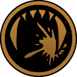
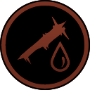

Description
The Crawler is a creature somewhat resembling merfolk, but twisted into a grotesque form. They are one of the most common creatures around the ocean in Barotrauma.
Crawlers are relatively small and agile, and are one of the few creatures capable of entering the Submarine. They possess four pairs of red eyes, green skin, segmented spines on their back and multiple hand-like appendages, with only the frontal ones having a functionality, allowing them to latch on surfaces, swim and crawl (hence their name).
Attacks
Jaw
 